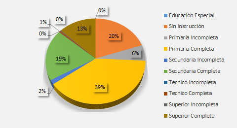

Trujillo, La Libertad
History
La Libertad is a Peruvian department located in the northwest of the country. Its capital and city more populated is Trujillo. And it has two World Heritage Sites declared by UNESCO, national park of the River Abiseo in 1983 and Chan Chan in 1986. It is a national leader in the Agro-export sector and in production de Oro. And it is the second department with the most voters according to the JNE as of 2021 AND with a population of more than 2 million liberteños by 2020.
Demography
Today, Trujillo is a rapidly growing city with a population of 1,859,640 in 2021. It is also the second fastest growing city in Peru and has had an annual growth rate of about 2.8% in recent years.
There are slightly more women (54%) than men (46%) and the average age of the people living in Trujillo he is thirty-two years old.
In the La Libertad region, the percentage by educational level with the highest number are those residents who have completed primary school (39%) followed by residents who do not have any instruction (20%)
